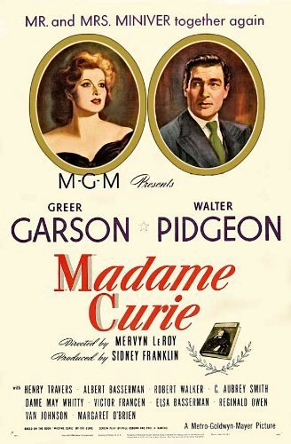

Madame Curie
16th Academy Awards
(Oscars 1944)
7 Nominations, 0 Awards
| Nominations | ||
|---|---|---|
| Category | Nominees | Result |
| Outstanding Motion Picture | Metro-Goldwyn-Mayer | Nominated |
| Actor | Walter Pidgeon | Nominated |
| Actress | Greer Garson | Nominated |
| Cinematography (Black-and-White) | Joseph Ruttenberg | Nominated |
| Art Direction (Black-and-White) | Cedric Gibbons, Edwin B. Willis, Hugh Hunt, and Paul Groesse | Nominated |
| Sound Recording | Douglas Shearer | Nominated |
| Music (Music Score of a Dramatic or Comedy Picture) | Herbert Stothart | Nominated |